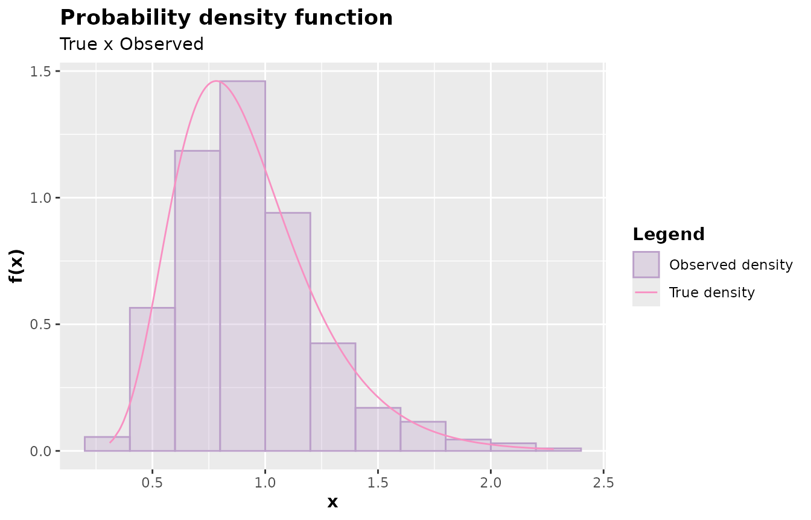

It works for any univariate distribution
Source:vignettes/it_works_for_any_univariate_distribution.Rmd
it_works_for_any_univariate_distribution.RmdIt works for any univariate distribution
Although most examples presented on this site and in the function
documentation involve densities implemented in R, the
accept_reject() function is capable of generating samples
from any univariate distribution, whether it is in R or not, or even one
that has not yet been invented. In other words, as long as you have a
density, just write the density and pass it to the
accept_reject() function.
The AcceptReject package is designed to be generic and timeless. Consider, for example, the family of Modified beta distributions, proposed in the paper Modified beta distributions. This is a family of probability distributions, as it is possible to generate various probability density functions through the proposed density generator, whose general density function is defined by:
\[f_X(x) = \frac{\beta^a}{B(a,b)} \times \frac{g(x)G(x)^{a - 1}(1 - G(x))^{b - 1}}{[1 - (1 - \beta)G(x)]^{a + b}},\] with \(x \geq 0\) and \(\beta, a, b > 0\), where \(g(x)\) is a probability density function, \(G(x)\) is the cumulative distribution function of \(g(x)\), and \(B(a,b)\) is the beta function.
The authors present a quantile function in closed form that depends
on the quantile of the base distribution, that is, \(G^{-1}(u) = x\) is known. But here, this is
not the case. We will use the accept_reject() function to
generate samples from the Modified Beta - \(G\) distribution, which is a distribution
that is not natively in R and could eventually be implemented by the
package user.

The following code implements the density (derived in \(x\) from the Modified Beta - \(G\)), for any \(G\). It is important to note that the user could implement it in another way. What matters is that the user has a function that implements the probability density function.
The user could, if desired, implement it directly for a specific \(G\), for example, Weibull. Here, it will be implemented for any \(G\).
Always remember, the accept_reject() function only needs
the argument f to be a function that implements the
probability density function in the continuous case or a probability
mass function in the discrete case.
library(numDeriv)
pdf <- function(x, G, ...){
numDeriv::grad(
func = function(x) G(x, ...),
x = x
)
}
# Modified Beta Distributions
# Link: https://link.springer.com/article/10.1007/s13571-013-0077-0
generator <- function(x, G, a, b, beta, ...){
g <- pdf(x = x, G = G, ...)
numerator <- beta^a * g * G(x, ...)^(a - 1) * (1 - G(x, ...))^(b - 1)
denominator <- beta(a, b) * (1 - (1 - beta) * G(x, ...))^(a + b)
numerator/denominator
}
# Probability density function - Modified Beta Weibull
pdf_mbw <- function(x, a, b, beta, shape, scale)
generator(
x = x,
G = pweibull,
a = a,
b = b,
beta = beta,
shape = shape,
scale = scale
)
# Checking the value of the integral
integrate(
f = \(x) pdf_mbw(x, 1, 1, 1, 1, 1),
lower = 0,
upper = Inf
)
#> 1 with absolute error < 5.7e-05Notice that the pdf_mbw() integrates to 1, being a
probability density function. Thus, the generator()
function generates probability density functions from another
distribution \(G_X(x)\). In the case of
the code above, the Weibull cumulative distribution function was
assigned to the generator() function, which could be any
other. Note also that I am deriving numerically so that the user does
not need to implement the probability density, which involves a somewhat
larger expression.
You need to understand that all the code above is a programming strategy, but if you don’t understand it very well, that’s okay, you just need to implement the probability density function that needs to generate the observations, in the way you already know how to do. Ok?
Now that we have the probability density function with the Modified
Beta Weibull density function - pdf_mbw(), let’s use the
accept_reject() function to generate observations of a
sequence of independent and identically distributed (i.i.d.) random
variables with the Modified Beta Weibull distribution.
library(AcceptReject)
#>
#> Attaching package: 'AcceptReject'
#> The following object is masked from 'package:stats':
#>
#> qqplot
library(cowplot)
# True parameters
a <- 10.5
b <- 4.2
beta <- 5.9
shape <- 1.5
scale <- 1.7
set.seed(0)
x <-
accept_reject(
n = 1000L,
f = pdf_mbw,
args_f = list(a = a, b = b, beta = beta, shape = shape, scale = scale),
xlim = c(0, 2.5)
)
# Plots
p1 <- plot(x)
p2 <- qqplot(x)
plot_grid(p1, p2, nrow = 1L, labels = "AUTO")
Did you notice how easy it is to use the AcceptReject
package? Just implement the probability density function and pass it to
the accept_reject() function. It doesn’t matter how you
implemented it; what matters is that you have the function to pass to
the f argument of accept_reject().